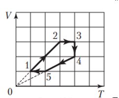
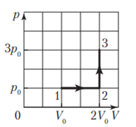
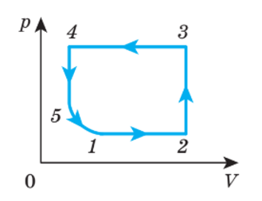
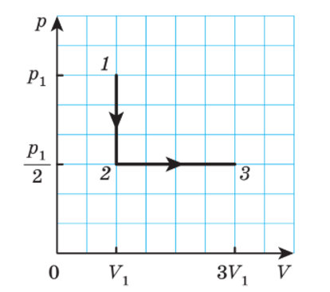
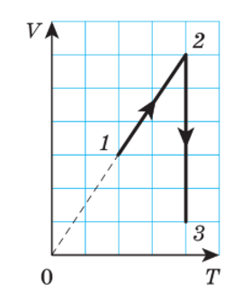
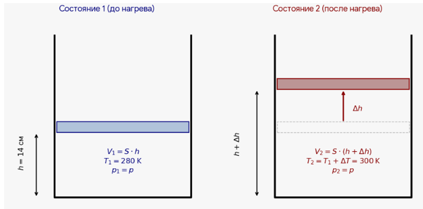
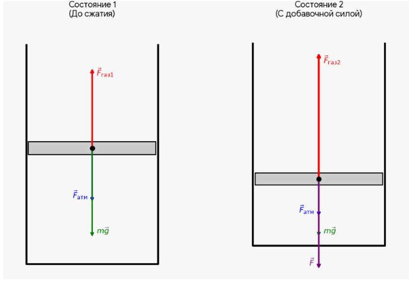

Газовые законы
Выберите вариант ответа или введите полученное числовое значение.
- $T_1 = 7 + 273 = 280\text{ К}$
- $T_2 = 77 + 273 = 350\text{ К}$
- $V_1 = 0{,}48\text{ м}^3$
По условию процесс изобарный ($P = \text{const}$). Используем закон Гей-Люссака:
Выразим и рассчитаем конечный объем:
- $V_1 = 60{,}0\text{ дм}^3 = 60{,}0 \cdot 10^{-3}\text{ м}^3$
- $V_2 = 76{,}0\text{ дм}^3 = 76{,}0 \cdot 10^{-3}\text{ м}^3$
- $p_1 = 133\text{ кПа} = 133 \cdot 10^3\text{ Па}$
По условию процесс изотермический ($T = \text{const}$). Используем закон Бойля-Мариотта:
Выразим и рассчитаем конечное давление:
- $T_2 = 17{,}0 + 273 = 290\text{ К}$
- $\frac{V_1}{V_2} = 2$
По условию процесс изобарный ($P = \text{const}$). Используем закон Гей-Люссака:
Выразим начальную абсолютную температуру $T_1$:
Переведем ответ обратно в градусы Цельсия для выбора варианта:
- $V_1 = 1{,}8\text{ л} = 1{,}8 \cdot 10^{-3}\text{ м}^3$
- $V_2 = 1{,}5\text{ л} = 1{,}5 \cdot 10^{-3}\text{ м}^3$
По условию процесс изотермический ($T = \text{const}$). Используем закон Бойля-Мариотта:
Выразим отношение конечного давления к начальному, чтобы узнать, во сколько раз оно увеличилось:
- $\Delta V_1 = 2{,}0\text{ л} = 2{,}0 \cdot 10^{-3}\text{ м}^3$
- $\eta = 50\% = 0{,}5$
- $\Delta V_2 = 1{,}0\text{ л} = 1{,}0 \cdot 10^{-3}\text{ м}^3$
Процесс изотермический ($T = \text{const}$). Используем закон Бойля-Мариотта для первого случая:
По условию объем уменьшился на $\Delta V_1$, а давление выросло на $\eta = 0{,}5$ (то есть на 50%):
Подставим эти выражения в закон Бойля-Мариотта:
Разделим на $p_1$ и найдем начальный объем $V_1$:
- Новый объем: $V_3 = V_1 - 1 = 6 - 1 = 5\text{ л}$
Запишем закон для начального и нового состояний:
Выразим новое давление $p_3$:
Давление стало $1{,}2p_1$, то есть увеличилось на 20%.
Ответ: вариант 4 (20%).- $V_1 = 12\text{ л} = 12 \cdot 10^{-3}\text{ м}^3$
- $p_1 = 4{,}0 \cdot 10^5\text{ Па}$
- $V_2 = 3{,}0\text{ л} = 3{,}0 \cdot 10^{-3}\text{ м}^3$
Для изотермического процесса выполняется закон Бойля-Мариотта:
Конечный объем системы после соединения сосудов равен:
Выразим и рассчитаем конечное давление $p_2$:
При изотермическом процессе $p_1 V_1 = p_2 V_2$. Конечное давление газа $p_2 = p_1 + \Delta p$. Из записанных уравнений найдем ответ:
При изохорном процессе $\frac{p_1}{T_1} = \frac{p_2}{T_2}$. Конечное давление газа $p_2 = kp_1$, конечная абсолютная температура $T_2 = T_1 + \Delta T$. Учитывая, что $\Delta T = \Delta t$, из записанных уравнений найдем ответ:

Из двух изобарных процессов $1 \to 2$ и $4 \to 5$, показанных на рисунке 135, изобарному охлаждению соответствует процесс $4 \to 5$.
Ответ: вариант 4 ($4 \to 5$).
При изобарном процессе $\frac{V_0}{T_0} = \frac{2V_0}{T_2}$. При изохорном процессе $\frac{p_0}{T_2} = \frac{3p_0}{T_3}$. Из записанных уравнений найдем ответ:

- а) изохорному нагреванию соответствует процесс 2–3. Объем неизменен ($V = \text{const}$), давление $p$ растет, следовательно, температура $T$ увеличивается.
- б) изотермическому расширению соответствует процесс 5–1. График представляет собой гиперболу ($pV = \text{const}$), при этом объем $V$ увеличивается.
- в) изобарному охлаждению соответствует процесс 3–4. Давление неизменно ($p = \text{const}$), объем $V$ уменьшается, следовательно, температура $T$ падает.

- $T_2 = 300\text{ К}$
Из графика определим параметры газа в состояниях 1, 2 и 3 по осям давления $p$ и объема $V$:
- Состояние 1: $p_1, V_1$
- Состояние 2: $\frac{p_1}{2}, V_1$
- Состояние 3: $\frac{p_1}{2}, 3V_1$
- Процесс 1–2 (изохорный, $V = \text{const}$):
По закону Шарля:$$\frac{p_1}{T_1} = \frac{p_2}{T_2} \implies \frac{p_1}{T_1} = \frac{p_1}{2T_2} \implies T_1 = 2T_2$$ $$T_1 = 2 \cdot 300 = 600\text{ К}$$ - Процесс 2–3 (изобарный, $p = \text{const}$):
По закону Гей-Люссака:$$\frac{V_2}{T_2} = \frac{V_3}{T_3} \implies \frac{V_1}{T_2} = \frac{3V_1}{T_3} \implies T_3 = 3T_2$$ $$T_3 = 3 \cdot 300 = 900\text{ К}$$

- $p_1 = 60\text{ кПа} = 60 \cdot 10^3\text{ Па}$
Пусть одна клетка по оси температур равна $T_0$, а по оси объемов — $V_0$. Тогда параметры состояний равны:
- Точка 1: $T_1 = 2T_0, V_1 = 3V_0$
- Точка 2: $T_2 = 4T_0, V_2 = 6V_0$
- Точка 3: $T_3 = 4T_0, V_3 = 1V_0$
- Процесс 1–2 (изобарный, $p = \text{const}$):
Линия направлена в начало координат, следовательно, давление постоянно:$$p_2 = p_1 = 60\text{ кПа}$$ - Процесс 2–3 (изотермический, $T = \text{const}$):
Температура постоянна ($T_2 = T_3 = 4T_0$). Применим закон Бойля-Мариотта:$$p_2 V_2 = p_3 V_3$$Выразим и рассчитаем давление $p_3$:$$p_3 = p_2 \cdot \frac{V_2}{V_3} = 60 \cdot \frac{6V_0}{1V_0} = 60 \cdot 6 = 360\text{ кПа}$$
- $m = 60{,}0\text{ г} = 60{,}0 \cdot 10^{-3}\text{ кг}$
- $V_1 = 12{,}0\text{ л} = 12{,}0 \cdot 10^{-3}\text{ м}^3$
- $T_1 = 240\text{ К}$
- $\rho = 2{,}40\text{ }\frac{\text{кг}}{\text{м}^3}$
- Нагревание газа происходит при постоянном давлении ($p = \text{const}$). Согласно закону Гей-Люссака для изобарного процесса:
$$\frac{V_1}{T_1} = \frac{V_2}{T_2}$$
- Выразим конечный объем газа $V_2$ через его массу и конечную плотность $\rho$:
$$V_2 = \frac{m}{\rho}$$
- Подставим $V_2$ в закон Гей-Люссака:
$$\frac{V_1}{T_1} = \frac{m}{\rho \cdot T_2}$$
- Выразим и рассчитаем конечную абсолютную температуру $T_2$:
$$T_2 = \frac{m \cdot T_1}{\rho \cdot V_1}$$ $$T_2 = \frac{60{,}0 \cdot 10^{-3} \cdot 240}{2{,}40 \cdot 12{,}0 \cdot 10^{-3}} = \frac{14{,}4}{0{,}0288} = 500\text{ К}$$
- $T_1 = 22 + 273 = 295\text{ К}$
- $p_1 = 5{,}9\text{ МПа} = 5{,}9 \cdot 10^6\text{ Па}$
- $T_2 = 275\text{ К}$
Так как газ находится в жестком баллоне, его объем остается неизменным ($V = \text{const}$). Согласно закону Шарля для изохорного процесса:
Выразим и рассчитаем конечное давление $p_2$:
- $T_1 = 7 + 273 = 280\text{ К}$
- $\Delta T = 20\text{ К}$
- $h = 14\text{ см} = 0{,}14\text{ м}$

Процесс является изобарным ($p = \text{const}$). Согласно закону Гей-Люссака:
Пусть $S$ — площадь поперечного сечения цилиндра, а $\Delta h$ — расстояние, на которое переместится поршень. Тогда:
- Начальный объем: $V_1 = S \cdot h$
- Конечный объем: $V_2 = S \cdot (h + \Delta h)$
- Конечная температура: $T_2 = T_1 + \Delta T$
Подставим выражения объемов в уравнение закона:
Раскроем пропорцию:
Выразим и рассчитаем перемещение поршня $\Delta h$:
- $p_0 = 100\text{ кПа} = 10^5\text{ Па}$
- $n = 2{,}0$
- $\rho = 1{,}0\text{ г/см}^3 = 1000\text{ кг/м}^3$
- $g = 10\text{ м/с}^2$
- Температура воздуха постоянна ($T = \text{const}$). Согласно закону Бойля-Мариотта:
$$p_1 V_1 = p_2 V_2$$
- Обозначим радиус пузырька на дне за $R_1$. У поверхности воды его радиус $R_2 = n \cdot R_1$. Объем шара $V = \frac{4}{3}\pi R^3$, поэтому объемы равны:
- На дне: $V_1 = \frac{4}{3}\pi R_1^3$
- У поверхности: $V_2 = \frac{4}{3}\pi (nR_1)^3 = n^3 V_1$
- Подставляя $n = 2$:
- На дне: $V_1$
- У поверхности: $V_2 = 2^3 \cdot V_1 = 8V_1$
- Подставим значения объемов и давлений в закон Бойля-Мариотта:
$$(p_0 + \rho gh) \cdot V_1 = p_0 \cdot 8V_1 \implies p_0 + \rho gh = 8p_0$$
- Упростим уравнение и выразим глубину $h$:
$$\rho gh = 7p_0 \implies h = \frac{7p_0}{\rho g}$$ $$h = \frac{7 \cdot 10^5}{1000 \cdot 10} = \frac{700000}{10000} = 70\text{ м}$$
- $m = 600\text{ г} = 0{,}6\text{ кг}$
- $S = 20{,}0\text{ см}^2 = 20{,}0 \cdot 10^{-4}\text{ м}^2$
- $p_0 = 100\text{ кПа} = 10^5\text{ Па}$
- $g = 10\text{ м/с}^2$

В каждом состоянии поршень покоится, поэтому векторная сумма сил равна нулю. Проектируя силы на вертикальную ось (вверх — положительное направление), получаем, что сила, направленная вверх, равна сумме сил, направленных вниз.
- Состояние 1 (до сжатия):
Условие равновесия сил:$$F_{\text{газ}1} = F_{\text{атм}} + F_{\text{тяж}}$$Подставляем формулы сил через давление и площадь ($F = pS$ и $F_{\text{тяж}} = mg$):$$p_1 S = p_0 S + mg$$Разделим обе части на $S$ и найдем начальное давление $p_1$:$$p_1 = p_0 + \frac{mg}{S} = 10^5 + \frac{0{,}6 \cdot 10}{20{,}0 \cdot 10^{-4}} = 10^5 + 3000 = 103\,000\text{ Па}$$ - По условию объем газа должен уменьшиться в 3 раза, то есть $V_2 = \frac{V_1}{3}$. Подставим это в закон:
$$p_1 V_1 = p_2 \cdot \frac{V_1}{3} \implies p_2 = 3p_1$$
- Состояние 2 (после сжатия):
Условие равновесия сил с учетом добавочной внешней силы $F$:$$F_{\text{газ}2} = F_{\text{атм}} + F_{\text{тяж}} + F$$Подставляем формулы сил через давление и площадь:$$p_2 S = p_0 S + mg + F$$Так как из первого уравнения $p_0 S + mg = p_1 S$, а также $p_2 = 3p_1$, подставим эти выражения:$$3p_1 S = p_1 S + F$$ $$F = 3p_1 S - p_1 S = 2p_1 S$$ - Расчет добавочной силы:
$$F = 2 \cdot 103000 \cdot 20{,}0 \cdot 10^{-4} = 412\text{ Н}$$
- $V = 4{,}0\text{ л} = 4{,}0 \cdot 10^{-3}\text{ м}^3$
- $p = 150\text{ кПа} = 150 \cdot 10^3\text{ Па}$
- $V_0 = 200\text{ см}^3 = 200 \cdot 10^{-6}\text{ м}^3$
- $p_0 = 100\text{ кПа} = 10^5\text{ Па}$
Так как камера мяча изначально пустая, весь воздух в ней появляется постепенно из насоса. Процесс изотермический ($T = \text{const}$).
- После 1-го хода поршня:
Насос забирает из атмосферы порцию воздуха объемом $V_0$ при давлении $p_0$ и загоняет её внутрь мяча в объем $V$. По закону Бойля-Мариотта этот воздух создаст в мяче давление $p_{(1)}$:$$p_0 \cdot V_0 = p_{(1)} \cdot V$$ - После $N$ ходов поршня:
Когда поршень сделает $N$ ходов, суммарный объем воздуха, взятого из атмосферы при давлении $p_0$, составит $N \cdot V_0$. Внутри мяча объемом $V$ этот воздух окажется сжатым до требуемого конечного давления $p$:$$p_0 \cdot (N \cdot V_0) = p \cdot V$$
Выразим и рассчитаем количество ходов поршня: